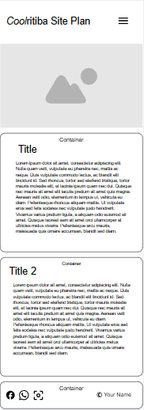
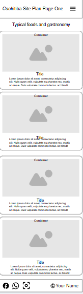
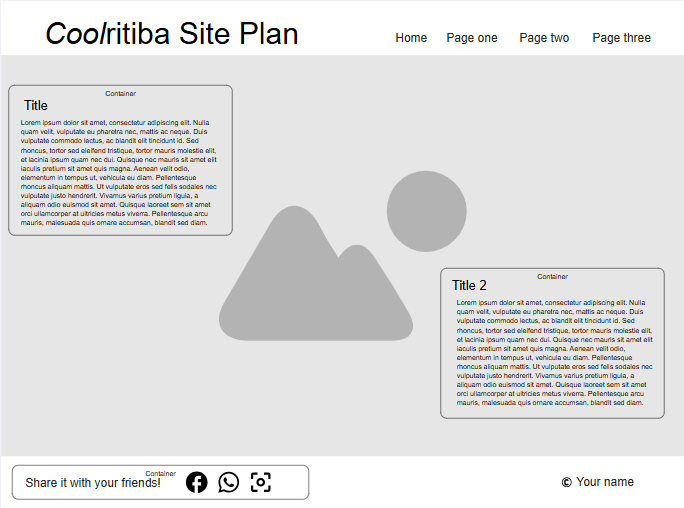
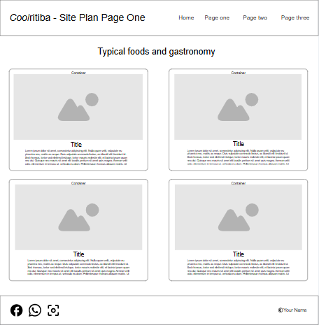

Site Name
Site Plan - Very Coolritiba
This name gives the users and visitors the feeling that the city they are about to visit is interesting and worth their time.
Optional Domain: verycoolritiba.org
Site Purpose
The website aims to show the world everything that the city of Curitiba has to offer, such as typical foods, tourist attractions and much more.
Scenarios
These are the questions that website visitors, who represent the target audience, are likely to ask:
- What is good about this Brazilian city that makes me interested and want to visit?
- How much will it cost me to visit the city and all its tourist attractions?
- How long will it take me to visit everything I can in the city?
Color Schema
- Basically I use the colors of the city flag, which has the colors green, white, blue and green. I decided to leave the header and footer in green, the body slightly green, almost white, a dark red top in the title h1 and black instead of blue in the h3 and texts inside the containers, below the images.
Typography
- Roboto: Used for headings and subheadings to maintain readability.
- Open Sans: Used for body text and paragraphs, offering a modern and clean look.
Wireframe
The wireframe will present the layout of the homepage in both mobile and desktop views.
Mobile View:
- Home
- Page One
Desktop View:
- Home
- Page One
